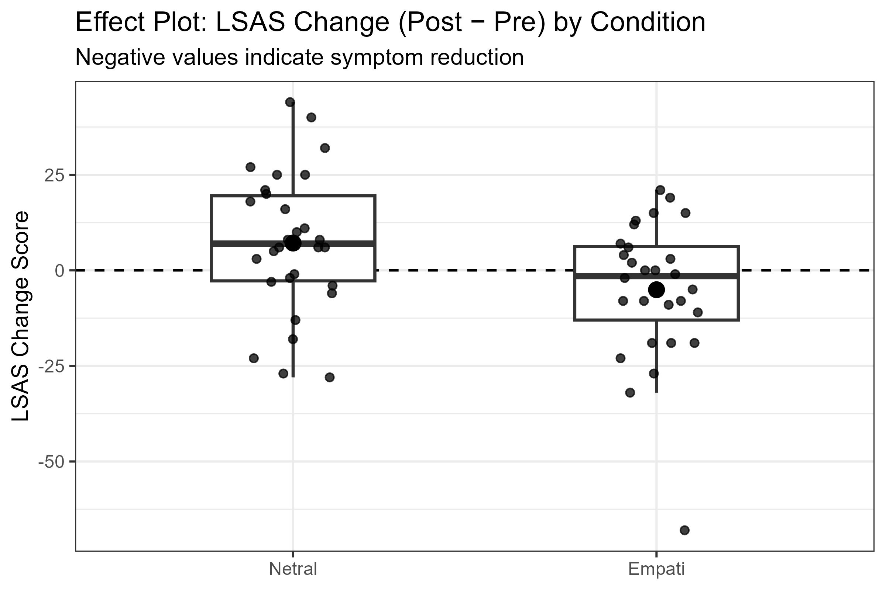
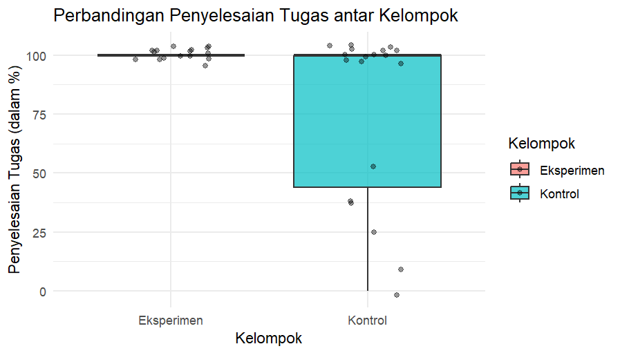
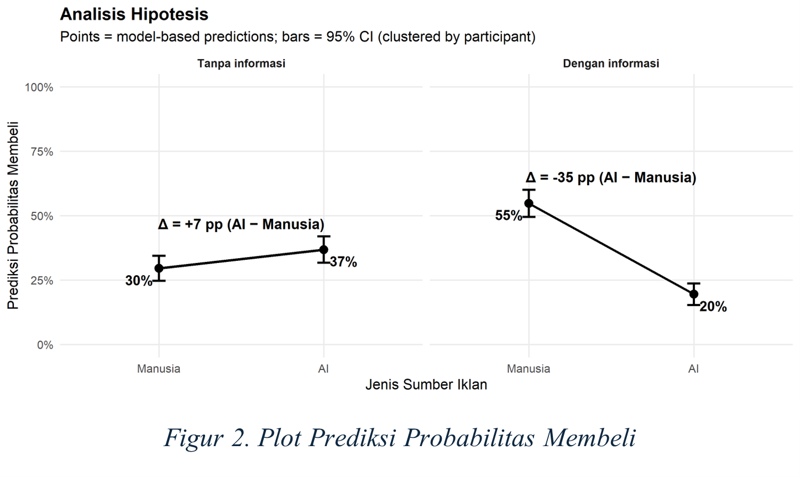
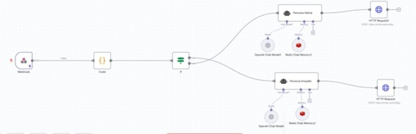

Evolusi AI untuk Kesejahteraan Mental
“Can machines truly heal the human mind, or are we risking more harm in our quest for accessibility?”
| Era | Tonggak | Catatan risiko/manfaat |
|---|---|---|
| 1966 | ELIZA (simulasi psikoterapis) | mudah di-anthropomorphize |
| 1970–80an | Expert system dan simulasi klinis (mis. PARRY) | berguna untuk pelatihan |
| Akhir 1980an | AI winter | hype > bukti |
| 2010an | Chatbot dan app mental health | isu privasi & evidence |
| 2025→ | Generative AI / LLM | personalisasi tinggi; risiko halusinasi |
Sumber: Wiederhold et al. (2026)
Rule-based → ML → LLM: personalisasi naik, guardrails makin penting.
| Bukti (paper) | Apa yang relatif “works” | Apa yang “not / caveat” |
|---|---|---|
| Zhang et al., 2025 (Character.AI bonds) | Penggunaan intensif secara umum bisa berkorelasi dengan wellbeing lebih tinggi | Companionship-oriented use terkait wellbeing lebih rendah, terutama saat interaksi intens, high self-disclosure, dan minim dukungan sosial manusia |
| Yeasmin et al.,2026 (Umbrella review monitoring) | AI (ML/NLP/wearables) meningkatkan akurasi diagnosis dan bisa memprediksi krisis; memperluas layanan untuk populasi underserved | Tantangan berulang: privasi data, bias algoritmik, kurang standar evaluasi |
| Alsayed et al.,2024 (Student well-being review) | Potensial membantu mengelola stress, anxiety, depression pada konteks mahasiswa; dipakai untuk advising & learning support | Bukti terbatas (13 studi); cakupan wellbeing lebih luas belum kuat |
| Casu et al., 2024 (Effectiveness & feasibility) | Indikasi perbaikan emotional wellbeing & dukung behavior change (mis. smoking cessation) | Hambatan: usability, fluktuasi engagement, sulit integrasi sistem layanan |
| Yang et al.,2024 (Engagement model) | Engagement didorong oleh affect, faktor sosial, kompatibilitas; trust & habit penting untuk sustain | Sampel muda & highly educated; facilitating conditions bukan isu besar di sampel ini |
| Li et al.,2023 (Meta-analysis CAs) | Menurunkan depresi & distress; lebih kuat pada CA multimodal/generative/mobile-integrated | Tidak signifikan meningkatkan broader psychological wellbeing |
| Wang et al.,2026 (Human–LLM collaboration) | H+AI meningkatkan skor komposit diagnosis/management | Efisiensi waktu tidak membaik; factual error tetap tinggi; ada “collaboration paradox” |
Bukan soal AI baik atau buruk, tetapi:
kapan, untuk siapa, dan desain apa yang membuat AI membantu.
AI sebagai Coach / Companion
Chatbot percakapan untuk dukungan emosional ringan, misalnya mengurangi kesepian atau memberikan respons empatik.
AI sebagai Conversational Assistant
Interaksi berbasis suara untuk dukungan kesehatan mental menggunakan ASR + generative AI + TTS.
AI sebagai Screening / Detection Tool
AI digunakan untuk membantu mendeteksi stres atau menginterpretasi hasil screening kesehatan mental.
AI sebagai Agentic System
Pendekatan baru menggunakan beberapa agen AI untuk fungsi berbeda dalam satu sistem.
Contoh: Aika (2026) — Safety Triage · Support Coach · Service Desk · Insight Agent
Peran AI: Support
Desain: field experimental (Empati vs Netral)
Sampel akhir: N=58

Peran AI: Engagement
Desain: field eksperimental (Dengan vs tanpa chatbot)

Peran AI: Influence
Desain: within-subject (tanpa info vs dengan info)
Sampel: N=72 (1440 observasi)

Design implication: support + navigation + guardrails, bukan “AI therapy pengganti”.
Why Stulo
Prinsip: support, not substitute · triase keamanan selalu prioritas
How it works (stepped support)
| Tier | Fungsi | Output aman |
|---|---|---|
| 0 | Consent | ekspektasi jelas |
| 1 | Self-help (Green) | latihan singkat |
| 2 | Check-in (Yellow) | rekomendasi langkah + monitoring |
| 3 | Handoff (Orange / Red) | Orange: rujuk peer counselor · Red: eskalasi ke konselor/layanan krisis |
Panduan: CONSORT-AI · SPIRIT-AI · pelaporan EQUATOR
Kalau tidak terukur (efektivitas, engagement, keamanan), maka tidak layak dideploy.
Kontak: erita@ui.ac.id
Economic, Consumer, and Computational Psychology Lab, FPsi-UI
| Category | What works (effectiveness & facilitators) | What’s not (risks & limitations) |
|---|---|---|
| Clinical outcomes | Reducing symptoms of depression and distress (Li et al.) | No significant improvement in broader “psychological well-being” / life satisfaction (Li et al.) |
| Collaborative workflow | Small gains in composite diagnostic/management accuracy (Wang et al.) | “Collaboration paradox”; factual error remains high; time efficiency not improved (Wang et al.) |
| User engagement | Emotional connection (“affect”), social factors, compatibility drive intention; trust & habit sustain use (Yang et al.) | Dropout/attrition and fluctuating engagement limit impact (Casu et al.; Alsayed et al.) |
| Social context | Low-barrier, non-judgmental outlet can help meet some social needs for some users (Zhang et al.) | Companionship-oriented bonding can correlate with lower well-being for vulnerable users under intense use/high disclosure/low human support (Zhang et al.) |
| Technical design | Multimodal / generative / mobile-integrated designs show stronger effects in CA interventions (Li et al.) | Privacy and bias concerns recur; monitoring/screening lacks standardized evaluation (Yeasmin et al.) |
| Efficiency | AI can support early triage / initial history-taking in some settings (Wang et al.) | Time efficiency is context-dependent and often does not improve in real-world clinical workflows (Wang et al.) |
Webhook → Code → If
- true → Persona Empati → HTTP Request
- false → Persona Netral → HTTP Request
Redis Chat Memory menyimpan konteks; LLM menghasilkan respons per persona.
